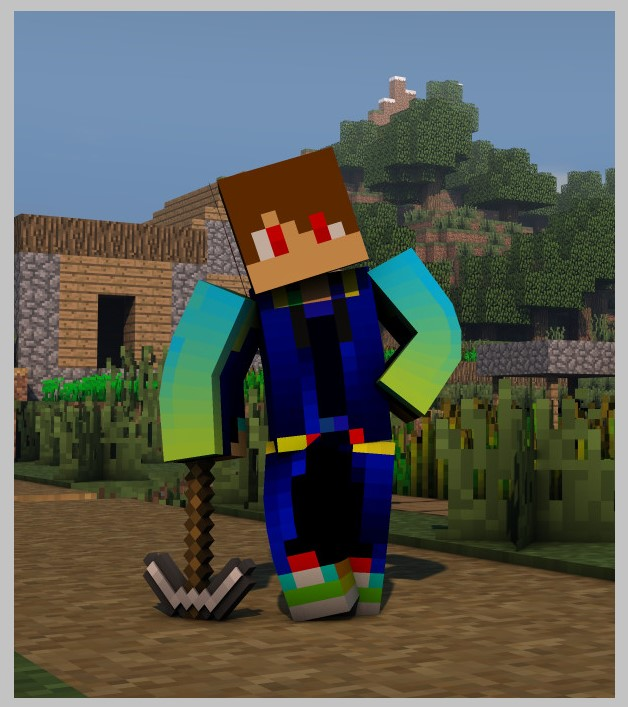

Sono me medesimo e vivo a Massa, in Toscana.
Solitamente sono una persona simpatica (o così dicono) ma spesso sono anche abbastanza timido. Non sono nè vegetariano nè vegano. Alcuni dei miei interessi sono listati nella pagina Interessi ed invece i miei studi nella pagina Studi.
Non sono particolarmente appassionato di film, ma mi piace leggere libri, solitamente romanzi gialli, di natura o d'avventura e mi piace anche viaggiare.
Preferisco la pizza al sushi, ed in generale non sono un grande mangiatore di pesce, preferendo la carne ottenuta da animali terresti o volatili. Come IDE solitamente uso
Atom per gli script o anche per i siti web come questo. Non so bene cosa altro scrivere su di me, ma il sito non sarebbe abbastanza carino perciò credo mi serva del testo di placeholder come questo che ho scritto, dovrebbe bastare spero. Forse qualche parola in più.